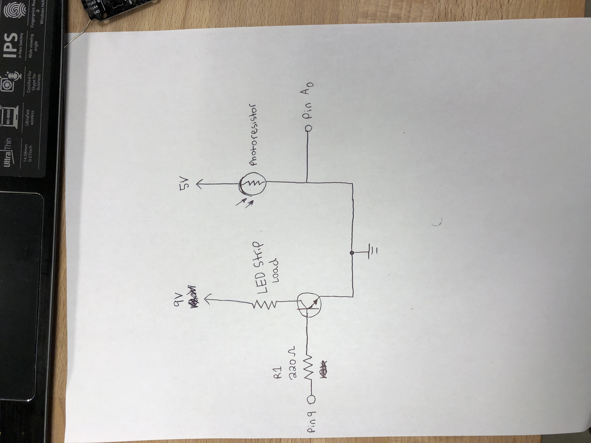

LED Strip Transistor Circuit!

In my breadboard I used a 220 ohm resistor in combination with a transistor, to balance the load (LED strip) to be controlled with my photoresistor. In hindsight I should have used a 10k ohm resistor to prevent excessive current from being drawn from my arduino pin.

My program prints the photoresistor and sensor output values to the serial monitor.

My schematic drawing of my circuit shows a 9V power supply connected to the load (LED strip), transistor, and pin 9 of my arduino. On the other side my arduino is supplying 5V of power to a photoresistor and is connected to pin A0.
This GIF shows how light effects the load (LED strips) in my circuit. When I cover the light on my photoresistor, my LED strip turns off!